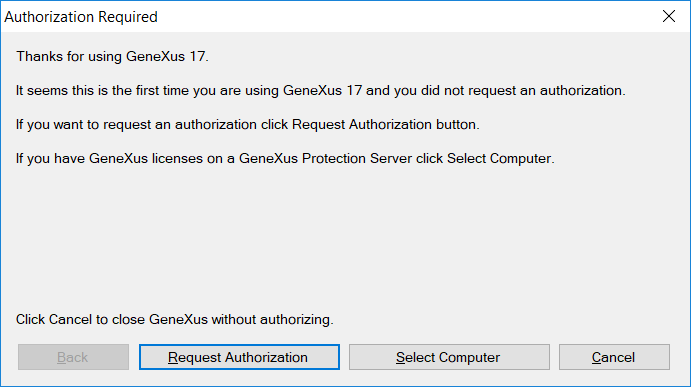

In order to request the licenses just execute GeneXus and an authorization wizard will be triggered if the Development Environment is not authorized. 1  It is a self-descriptive process. You can either request the license online (recommended option) or by sending an e-mail to your local distributor. As in previous versions, it is possible to install licenses in a local installation or a remote computer to share the license with your co-workers. To use licenses from a remote server, use the Select Computer option and select the corresponding server name. The GeneXus Protection Server needs to be installed in that server. Coming from previous GeneXus versions?If you already have licenses of previous GeneXus Versions you can upgrade them to GeneXus 16 and share them with that previous version. See Upgrade licenses to a new GeneXus version for more details. 1 In any case, you can also use the License Manager to request, transfer or uninstall licenses. ConsiderationsIf you run GeneXus in a Terminal Server or using Remote Desktop connection you must install GeneXus Protection Server in the machine where GeneXus will execute. If there are not enough license copies available to use, the following screen will appear: See Also |
| Backlinks |
| Category:GeneXus 17 Installation Manual |